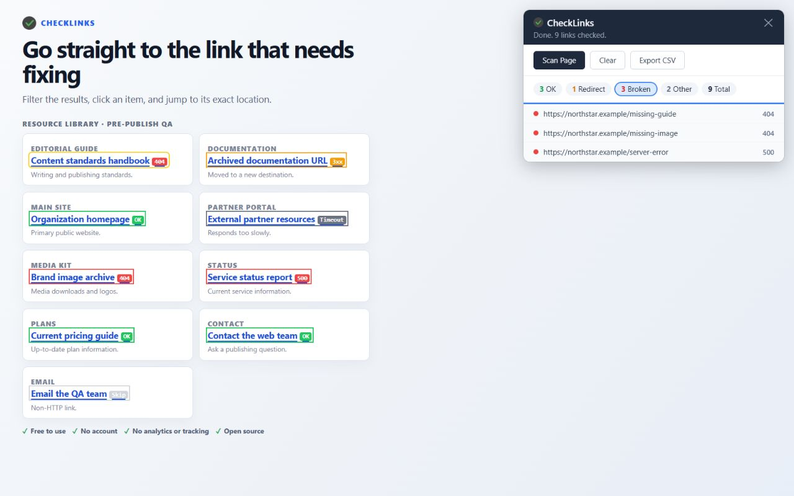

Migration QA · CheckLinks guide
Broken-Link QA After a Website Migration
Short answer: Start with an old-to-new URL map, scan representative pages on the migrated site with CheckLinks, and use Broken, Redirect, and Other to triage what the new page actually exposes. Export the findings for handoff, then run separate server and search-engine checks for the migration's full URL and SEO behavior.
Short demonstration: check a migrated page
- Build the map first. Keep the old URL, intended new URL, migration status, and owner in a working inventory. Mark whether each old URL should redirect, disappear, or remain unchanged. This map is what lets you judge a redirect instead of treating every 3xx as a defect.
- Choose representative templates. On the new host, open the homepage, global navigation and footer, a listing page, a detail or article page, a search or utility page, and a document/PDF landing page when those patterns exist. Include a few migrated pages with historically deep links or unusual query strings.
- Scan each rendered page. Click the CheckLinks icon and let the panel finish. Choose Broken to find 4xx/5xx destinations still embedded in new content. Choose Redirect to compare the followed target with the old-to-new map. Choose Other to isolate timeouts, network errors, and skipped links for a second pass.
- Fix internal sources, not just symptoms. Click a result to jump to the exact anchor on the page. An intentional old-to-new redirect may be correct for an external visitor, but an internal link that still points at the old path is usually stale: update it to the final destination and avoid adding an unnecessary hop.
- Re-scan and hand off. Re-run the page after fixes are live in the same environment. Export CSV and attach it to the migration ticket with the URL map, the sampled templates, and notes for any accepted redirect or transient failure.

Migration checks outside the extension
These checks answer different questions and should stay in the migration plan:
- Test the old URL inventory against the server or edge layer and verify the intended 301/308 destination, redirect chains, loops, and query-string handling.
- Inspect canonical URLs and hreflang relationships on the new pages, including language or regional variants.
- Validate the new XML sitemap, robots.txt rules, accidental noindex headers or tags, and any excluded route patterns.
- Use Search Console or the relevant webmaster tools to review indexing and discovered URL errors after launch.
- Run a full inventory or crawler when the migration requires coverage of pages that are not linked from the representative samples.
Inspect a migrated page in context
Use CheckLinks for the rendered-page portion of your migration QA pass.
Install CheckLinks from the Chrome Web Store